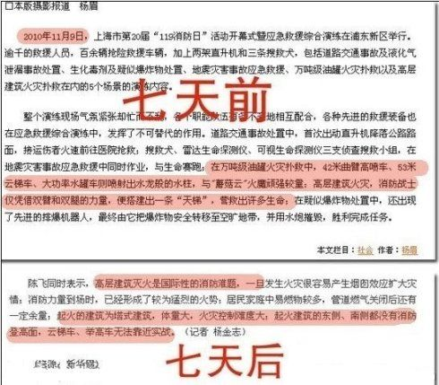

10天前的11·15，当全国（尤其是上海）的老百姓还在回味着那个“SB 会”（世博会），上海的某个高楼却很不识相地烧起来了。在接下来的这段时间里，俺留意了一下，感觉上海市政府的所作所为，基本符合党国处理灾难事件的标准操作流程。考虑到某些同学没听说过此流程，今天有必要来一个扫盲介绍（俺很喜欢写扫盲帖 :）。
应对灾难，让杯具变洗具的 SOP（Standard Operating Procedure）
灾难发生后......
俺在之前的帖子（请翻墙看“这里”和“这里”），已经介绍了“新华社”在整个“真理部”体系中的重要性。因此，当灾难发生时，腥滑舌会在第一时间发出通稿。这通稿就好比八股文。根据不同的新闻选题，分别对应【固定的】套路＆格式。早先已有网友整理了一个“新华社火灾通稿”的模板，俺特地贴出来，以飨读者：
================华丽的分割线================
新华社 XX月XX日XX时讯
XX月XX日XX时，XX市XX区正在进行XX作业的XX大楼突发火灾，截止记者发稿，大火已经被扑灭。据现场初步调查，火灾是因为施工不当引起。
火灾发生后，党和国家领导人高度重视这一突发事件，中央政治局委员XXX、XXX，以及中共XX市委书记XXX同志，市长XXX同志先后赶赴现场指挥处置，前后共调集当地消防队共XX辆消防车，XX台消防设备，X架直升飞机参加灭火行动。
在中央领导同志的关心下，由XXX同志作为组长的临时指挥小组迅速部署指挥XXX名消防人员冲入火场进行，仅仅用了X小时就基本扑灭了明火。在火灾发生后的X分钟内，当地武警部队出动XXX名官兵，迅速到达现场，与先期赶到的XX市公安干警一同在周边XX公里范围内拉起警戒，并协助疏散民众。
广大英勇的消防指战员在灭火行动中，不顾火高风大的恶劣条件，以迅速果敢的行动阻止了火势的蔓延。除该大楼外，附近建筑并没有波及。同时，XX市消防队参战的指战员累计有XX名负伤，其中X名伤势较重，伤重人员已经第一时间被救至当地的XX医院、XX医院。目前伤员没有生命危险。
火场周边的广大市民自觉配合民警、武警指挥，迅速撤离。部分市民积极参加到维护周边道路交通、社会治安的行动中。现场没有出现聚众围观现象，给灭火行动带来了极大便利。广大市民纷纷表示，大火没有给他们造成任何影响。
XX市委市政府已经成立了由XX同志任组长的事故调查小组和善后小组，全面启动了火灾调查和善后工作，中国XX保险公司已经派员到现场勘察，并与有关方面接触。目前死者伤者的家属，情绪稳定。
火灾发生后，X国总统XXX，X国总理XXX，X国国王XXX，纷纷打电话，或者以电报方式慰问此事。同时对中国人民能迅速破灭大火甚为钦佩，X国总统在得知本次事件后，连连称赞中国的消防战士英勇果敢、设备精良，希望中国政府能援助其国内消防事业的发展。国务院及有关方面对上述国家表示感谢，并表示有机会的话将进行XXX。
新华社记者XX，发自XX市
================华丽的分割线================
发完通稿，接下来就要找相关的领导登台亮相。
请注意：咱们天朝是很强调等级森严滴，不同规模的灾难，会让不同级别的领导出面。具体的领导级别大概有：村长、乡长、镇长、县长、市长、省长、部长、总理。
比如这次火灾，就由公安部【部长】孟建柱同学粉墨登场。
如果留意一下党国的喉舌，会看到如下一系列新闻标题：
为了面上过得去，天朝还需要出动一票军队或武警（注：消防队属于武警系统）象征性地做些救灾工作，主要是做做样子给屁民们看。
比如此次火灾，最讽刺的地方在于，就在火灾发生前的11月9日（相距不到一星期），在上海浦东刚刚举行了一次号称“高科技、高规格”的消防演习。演习中，出动了53米高的消防云梯......
而静安区那个高楼着火并烧了3-4个小时后，也没有见着那个超高的云梯以及各种牛逼的消防装备。各位同学们，只需用膝盖想一想：要么11月9日的演习是做秀；要么11月15日的救火是做秀。
以下是网友贴出的截图：

经常看 CCAV 的同学，应该对此种场景耳熟能详了，俺就不再浪费口水。
如果灾难达到一定级别（例如四川地震），咱们的温影帝就会亲临现场表演啦。影帝的经典桥段是：一边抹着眼泪，一边带着颤音说：
此次上海火灾的 SOP（标准操作流程），最大的缺憾就是少了温宝宝的做秀。据天朝的官方消息：火灾当天，影帝正在澳门扭秧歌呢（见下图）。估计党国觉得死的人还不够多，不值得影帝亲自跑一趟。
不过捏，和天朝的胡老大哥比起来，温宝宝还算是不错的了。胡面瘫的经典语录是：不折腾，并由此赢得“折腾帝”的美誉。而影帝貌似还挺喜欢折腾的，前不久出国访问，还时不时地喊一两句“政改”的高调。
通常来说，灾难分为“天灾”和“人祸”两种。
如果是天灾。砖家/叫兽会引经据典，力图证明该灾难是百年/千年/万年一遇滴（年限长短视灾难规模而定）。总而言之，是老天爷滴错，和党国没关系。
如果是人祸，有两种处理流程。假设人祸跟政治无关，就去找几个替罪羊，把罪名都推到他们身上；如果人祸与政治沾边，那就更简单了，直接就把屎盆子扣到【国外反华势力】头上。
这次的火灾，貌似扯不上政治因素，因此就选定4个可怜的、没有后台、没有背景的电焊工作为替罪羊。网上有云：电焊工/农民工/临时工，挣的是卖白菜的钱，顶的是卖白粉的罪。
党国每年的财政税收，高居世界前列。每次有大盛会/大庆典，都会搞出惊人的排场（比如奥运、世博，都花了几千亿）。奇怪的是，一旦碰到灾难，党国就突然变得拮据起来，厚着脸皮找屁民们要捐款。最终，也不知道这些捐款落入哪些贪官的腰包。（据说玉树地震的救灾费用仅占捐款总数的一小部分）
只要灾难达到一定级别，赈灾演出总是少不了滴。
某些特殊场合，还能荣幸地邀请到【国母级】的歌手登台亮相。所谓滴【国母级】歌手，主要是指：江太上皇的宋国母 ＆ 习皇储的彭国母。
最后，当地会召开各种形式的开表彰会/庆功会。各地的电视台/报刊/杂志/电台会纷纷颂扬救灾先进个人/先进团体。级别够高的话，CCTV 的国际频道，也会掺和进来，报道说：国际社会对救灾组织得力一片赞叹。
十个步骤走完，全国上下开始洋溢着一片喜庆的气氛——【杯具】正式地变为【洗具】。
咱们中国人，“遗忘”的本领总是很强滴！再大的灾祸，死再多的人，用不了多久，也很快会被淡忘。个把月之后，还有多少人记得：那些因为灾难而支离破碎的家庭，那些因为灾难而失去亲友的百姓。
俺博客上，和本文相关的帖子（需翻墙）：
《对政府——多些"监督问责"，少些"煽情感动"》
《关于抹黑 Google——谈谈党国对舆论的操纵手法》
灾难发生后......
一、“腥滑舌”发通稿，不忘强调“群众情绪稳定”
俺在之前的帖子（请翻墙看“这里”和“这里”），已经介绍了“新华社”在整个“真理部”体系中的重要性。因此，当灾难发生时，腥滑舌会在第一时间发出通稿。这通稿就好比八股文。根据不同的新闻选题，分别对应【固定的】套路＆格式。早先已有网友整理了一个“新华社火灾通稿”的模板，俺特地贴出来，以飨读者：
================华丽的分割线================
新华社 XX月XX日XX时讯
XX月XX日XX时，XX市XX区正在进行XX作业的XX大楼突发火灾，截止记者发稿，大火已经被扑灭。据现场初步调查，火灾是因为施工不当引起。
火灾发生后，党和国家领导人高度重视这一突发事件，中央政治局委员XXX、XXX，以及中共XX市委书记XXX同志，市长XXX同志先后赶赴现场指挥处置，前后共调集当地消防队共XX辆消防车，XX台消防设备，X架直升飞机参加灭火行动。
在中央领导同志的关心下，由XXX同志作为组长的临时指挥小组迅速部署指挥XXX名消防人员冲入火场进行，仅仅用了X小时就基本扑灭了明火。在火灾发生后的X分钟内，当地武警部队出动XXX名官兵，迅速到达现场，与先期赶到的XX市公安干警一同在周边XX公里范围内拉起警戒，并协助疏散民众。
广大英勇的消防指战员在灭火行动中，不顾火高风大的恶劣条件，以迅速果敢的行动阻止了火势的蔓延。除该大楼外，附近建筑并没有波及。同时，XX市消防队参战的指战员累计有XX名负伤，其中X名伤势较重，伤重人员已经第一时间被救至当地的XX医院、XX医院。目前伤员没有生命危险。
火场周边的广大市民自觉配合民警、武警指挥，迅速撤离。部分市民积极参加到维护周边道路交通、社会治安的行动中。现场没有出现聚众围观现象，给灭火行动带来了极大便利。广大市民纷纷表示，大火没有给他们造成任何影响。
XX市委市政府已经成立了由XX同志任组长的事故调查小组和善后小组，全面启动了火灾调查和善后工作，中国XX保险公司已经派员到现场勘察，并与有关方面接触。目前死者伤者的家属，情绪稳定。
火灾发生后，X国总统XXX，X国总理XXX，X国国王XXX，纷纷打电话，或者以电报方式慰问此事。同时对中国人民能迅速破灭大火甚为钦佩，X国总统在得知本次事件后，连连称赞中国的消防战士英勇果敢、设备精良，希望中国政府能援助其国内消防事业的发展。国务院及有关方面对上述国家表示感谢，并表示有机会的话将进行XXX。
新华社记者XX，发自XX市
================华丽的分割线================
二、领导依次登台，亲临现场指挥救灾工作
发完通稿，接下来就要找相关的领导登台亮相。
请注意：咱们天朝是很强调等级森严滴，不同规模的灾难，会让不同级别的领导出面。具体的领导级别大概有：村长、乡长、镇长、县长、市长、省长、部长、总理。
比如这次火灾，就由公安部【部长】孟建柱同学粉墨登场。
三、中央领导高度重视、做出重要批示
如果留意一下党国的喉舌，会看到如下一系列新闻标题：
上海高层大火已致49死，胡锦涛温家宝作重要指示
孟建柱深夜抵沪指导火灾救援，传达胡锦涛温家宝指示
四、出动军队/武警进行救灾
为了面上过得去，天朝还需要出动一票军队或武警（注：消防队属于武警系统）象征性地做些救灾工作，主要是做做样子给屁民们看。
比如此次火灾，最讽刺的地方在于，就在火灾发生前的11月9日（相距不到一星期），在上海浦东刚刚举行了一次号称“高科技、高规格”的消防演习。演习中，出动了53米高的消防云梯......
而静安区那个高楼着火并烧了3-4个小时后，也没有见着那个超高的云梯以及各种牛逼的消防装备。各位同学们，只需用膝盖想一想：要么11月9日的演习是做秀；要么11月15日的救火是做秀。
以下是网友贴出的截图：
五、头一批被救的群众感谢裆，感谢郭嘉
经常看 CCAV 的同学，应该对此种场景耳熟能详了，俺就不再浪费口水。
六、必要时，影帝登场表演
如果灾难达到一定级别（例如四川地震），咱们的温影帝就会亲临现场表演啦。影帝的经典桥段是：一边抹着眼泪，一边带着颤音说：
我来晚了~~~
此次上海火灾的 SOP（标准操作流程），最大的缺憾就是少了温宝宝的做秀。据天朝的官方消息：火灾当天，影帝正在澳门扭秧歌呢（见下图）。估计党国觉得死的人还不够多，不值得影帝亲自跑一趟。
不过捏，和天朝的胡老大哥比起来，温宝宝还算是不错的了。胡面瘫的经典语录是：不折腾，并由此赢得“折腾帝”的美誉。而影帝貌似还挺喜欢折腾的，前不久出国访问，还时不时地喊一两句“政改”的高调。
七、砖家/叫兽纷纷出笼，进行相关论证
通常来说，灾难分为“天灾”和“人祸”两种。
如果是天灾。砖家/叫兽会引经据典，力图证明该灾难是百年/千年/万年一遇滴（年限长短视灾难规模而定）。总而言之，是老天爷滴错，和党国没关系。
如果是人祸，有两种处理流程。假设人祸跟政治无关，就去找几个替罪羊，把罪名都推到他们身上；如果人祸与政治沾边，那就更简单了，直接就把屎盆子扣到【国外反华势力】头上。
这次的火灾，貌似扯不上政治因素，因此就选定4个可怜的、没有后台、没有背景的电焊工作为替罪羊。网上有云：电焊工/农民工/临时工，挣的是卖白菜的钱，顶的是卖白粉的罪。
八、各级政府开始号召大家捐款，各地群众积极“被”捐款
党国每年的财政税收，高居世界前列。每次有大盛会/大庆典，都会搞出惊人的排场（比如奥运、世博，都花了几千亿）。奇怪的是，一旦碰到灾难，党国就突然变得拮据起来，厚着脸皮找屁民们要捐款。最终，也不知道这些捐款落入哪些贪官的腰包。（据说玉树地震的救灾费用仅占捐款总数的一小部分）
九、央视或地方电视台进行赈灾演出
只要灾难达到一定级别，赈灾演出总是少不了滴。
某些特殊场合，还能荣幸地邀请到【国母级】的歌手登台亮相。所谓滴【国母级】歌手，主要是指：江太上皇的宋国母 ＆ 习皇储的彭国母。
十、开表彰会/庆功会
最后，当地会召开各种形式的开表彰会/庆功会。各地的电视台/报刊/杂志/电台会纷纷颂扬救灾先进个人/先进团体。级别够高的话，CCTV 的国际频道，也会掺和进来，报道说：国际社会对救灾组织得力一片赞叹。
十个步骤走完，全国上下开始洋溢着一片喜庆的气氛——【杯具】正式地变为【洗具】。
咱们中国人，“遗忘”的本领总是很强滴！再大的灾祸，死再多的人，用不了多久，也很快会被淡忘。个把月之后，还有多少人记得：那些因为灾难而支离破碎的家庭，那些因为灾难而失去亲友的百姓。
俺博客上，和本文相关的帖子（需翻墙）：
《对政府——多些"监督问责"，少些"煽情感动"》
《关于抹黑 Google——谈谈党国对舆论的操纵手法》
版权声明
本博客所有的原创文章，作者皆保留版权。转载必须包含本声明，保持本文完整，并以超链接形式注明作者编程随想和本文原始地址：
https://program-think.blogspot.com/2010/11/sop-of-shanghai-fire.html
本博客所有的原创文章，作者皆保留版权。转载必须包含本声明，保持本文完整，并以超链接形式注明作者编程随想和本文原始地址：
https://program-think.blogspot.com/2010/11/sop-of-shanghai-fire.html